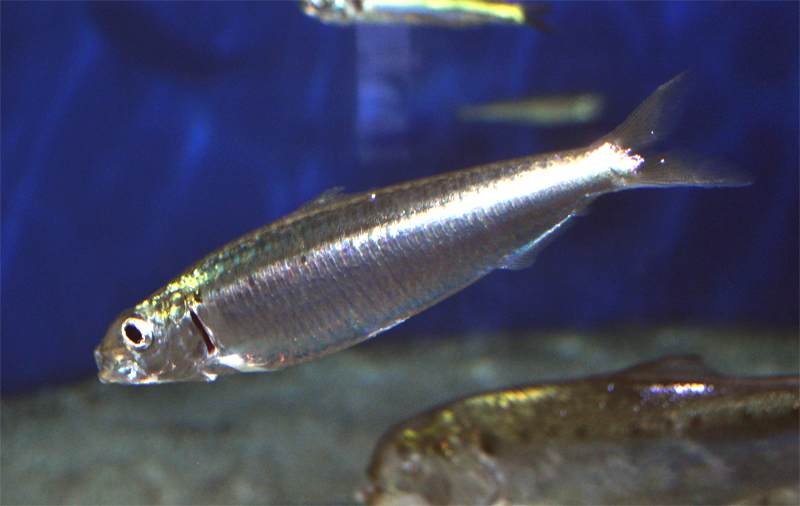

Sardina

También llamada Parrocha o Souba. Es un pescado azul y de agua salada. Vive en aguas desde los 12 a los 24 grados. La sardina pertenece a la familia
Clupeidos, orden Clupeiformes, uno de los grupos de peces pelágicos más abundantes y distribuidos por todo el mundo, cuya pesca es muy importante
desde el punto de vista económico y alimenticio.Es un pez gregario que vive en grandes bancos de entre 15 a 50 m. Habita tanto en el litoral como incluso en la costa y es el alimento para muchos depredadores.
Se alimentan de plancton, pequeños peces, crustáceos y huevos de otras especies. Es una especie cuya pesca está estrictamente regulada por la Unión Europea. Su carne tiene un excelente sabor aunque es de mala conservación.
- El cuerpo es alargado, no muy comprimido.
- La aleta dorsal se origina más cerca del rostro que de la base de la caudal.
- El dorso es de color verde pardo y a lo largo de los flancos presenta una banda azulada.
- El vientre es blanco plateado.
- Las aletas son incoloras, salvo la dorsal, que está un poco oscurecida.
MENU